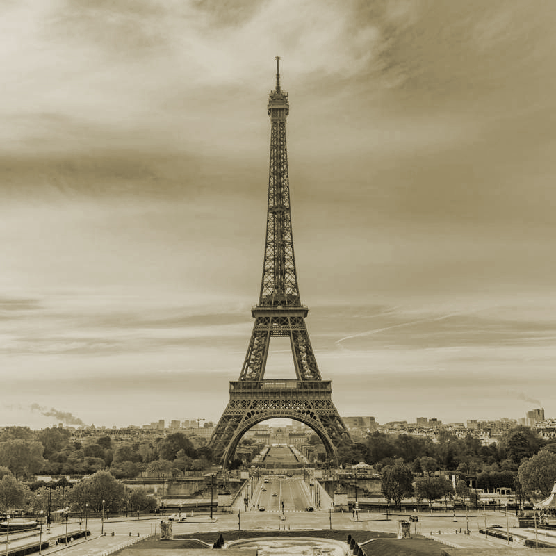
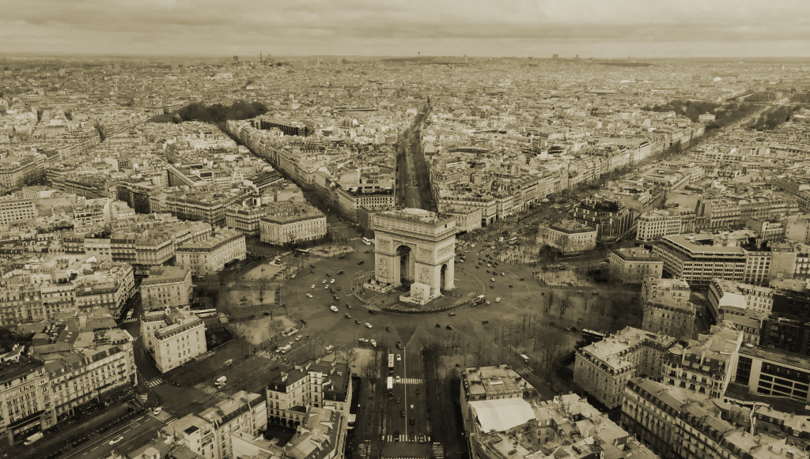
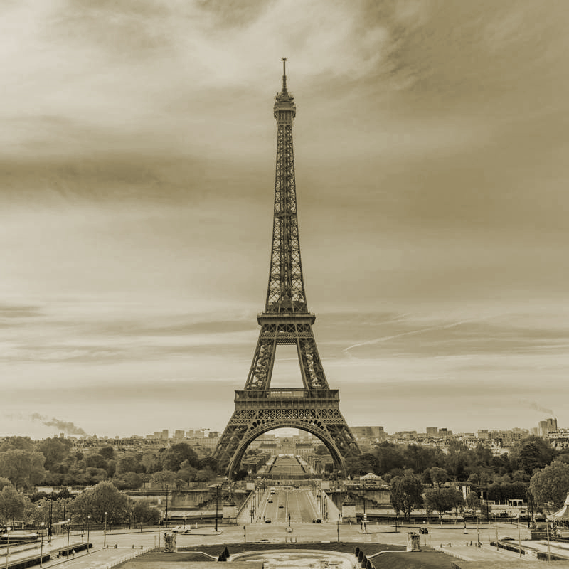
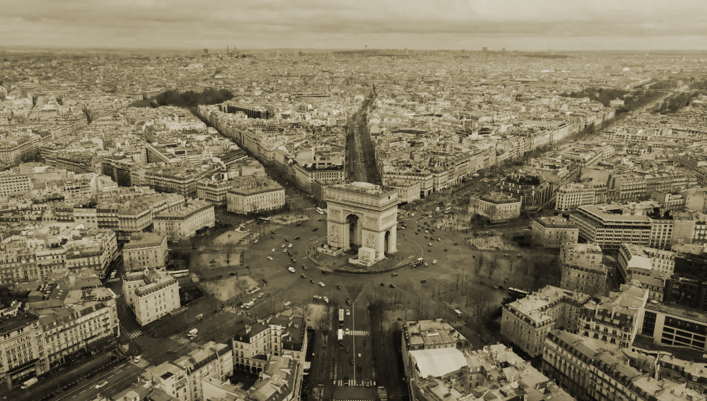

¡Bienvenidos al corazón de la grandeza parisina! Sumérgete en la majestuosidad del Arco de Triunfo a través de nuestra página, donde convergen historia, cultura y el legado de grandes figuras como Napoleón Bonaparte y Juane de Arco bajo el cielo de París
GALERIA

 




HISTORIA
El Arco de Triunfo, una de las estructuras más icónicas de París, fue encargado por Napoleón Bonaparte en 1806 como un monumento destinado a conmemorar las victorias militares de Francia. Diseñado por el arquitecto Jean Chalgrin, la construcción comenzó en 1808 pero sufrió interrupciones debido a las Guerras Napoleónicas y la caída del Imperio de Napoleón en 1815. No fue hasta 1836, bajo el reinado de Luis Felipe I, que el arco fue finalizado y abierto al público. Situado en el centro del Place de l'Étoile (ahora conocido como Place Charles de Gaulle), el arco no solo honra las conquistas militares de Francia, sino que también simboliza la resistencia y el orgullo nacional.
Desde su inauguración, el Arco de Triunfo ha sido testigo de importantes eventos históricos, incluyendo desfiles militares, manifestaciones políticas y ceremonias conmem.. Es un punto focal en la ciudad de París, atrayendo a millones de visitantes cada año que admiran su imponente arquitectura neoclásica y disfrutan de las vistas panorámicas de la ciudad desde su plataforma superior. Como símbolo de la grandeza y la historia de Francia, el Arco de Triunfo continúa siendo un monumento imprescind. tanto para los parisinos como para los visitantes de todo el mundo.
NAPOLÉON BONAPARTE
Nap. Bonaparte, emperador francés del siglo XIX, encargó la construcción del Arco de Triunfo en 1806 para conmemorar sus victorias militares y proyectar el poderío de Francia en Europa. Este monumento neoclásico, diseñado por Jean Chalgrin, se convirtió en un símbolo perdurable de su legado imperial.
JEANNE D'ARC
Juana de Arco, heroína medieval francesa, lideró a las tropas durante la Guerra de los Cien Años con una ferviente fe religiosa y un coraje excepcional. Su papel crucial en la liberación de Francia de la ocupación inglesa la convirtió en un icono nac. y un símbolo de la resistencia francesa.
LOUS PHILIPPE
Luis Felipe I, rey de Francia de 1830 a 1848, supervisó la finalización del Arco de Triunfo y promovió la modernización urbana de París, incluyendo la expansión de los Campos Elíseos. Conocido como el "Rey Ciudadano", su reinado marcó un período de cambios significativos